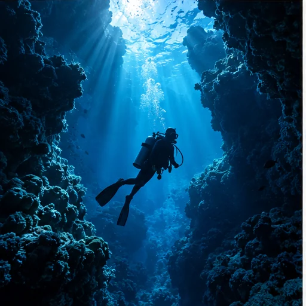
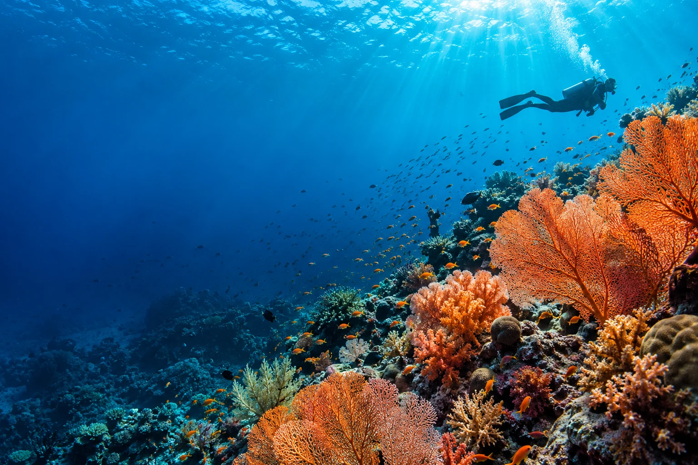
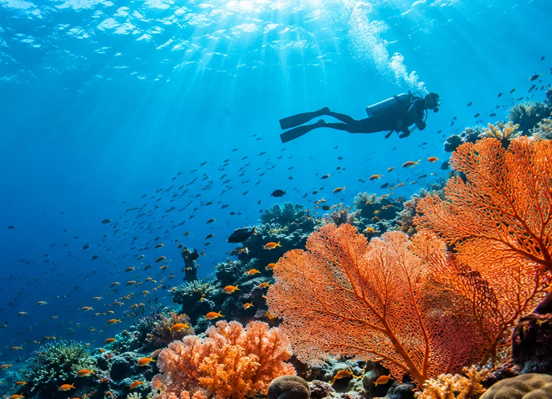

GUIDED DIVING

MAKASSAR · SULAWESI SELATAN · INDONESIA
Ada dunia lain di bawah permukaan.
Jelajahi, pelajari, dan jaga bersama Gowa Dive Center.
Perjalanan yang berkesan.
Laut yang tetap terjaga.
MORE THAN A DIVE
Dari penyelaman pertama hingga perjalanan menjelajah pulau, kami membantu Anda merencanakan pengalaman yang sesuai. Personal, penuh rasa ingin tahu, dan menghormati kehidupan laut.
FIND YOUR NEXT BLUE
Pilih cara Anda menikmati laut.
Kami bantu merencanakan sisanya.
Harga, fasilitas, jadwal, dan ketersediaan dikonfirmasi saat konsultasi.

A NEW PERSPECTIVE STARTS HERELEARN. BREATHE. DISCOVER.
Belum pernah menyelam? Atau ingin melanjutkan perjalanan belajar Anda? Mulai dari percakapan tentang pengalaman, kenyamanan, dan tujuan Anda.
Tanyakan discovery dive dan pengenalan aktivitas air. Program ini bukan sertifikasi. Kelayakan kesehatan, pendampingan, dan persyaratan akan dibahas sebelum kegiatan.
Diskusikan guided diving atau informasi Open Water dan Advanced. Penyelenggara, lembaga sertifikasi, instruktur, harga, dan jadwal perlu dikonfirmasi.
LEAVE ONLY BUBBLES
Keindahan bawah laut adalah alasan kita datang, dan tanggung jawab kita untuk melindunginya. Nikmati laut tanpa menyentuh karang, mengejar satwa, atau meninggalkan sampah.
Mari BerkolaborasiDiskusikan edukasi laut dan reef ecology untuk kelompok atau institusi.
Jaga jarak dari satwa, kendalikan daya apung, dan hormati arahan pemandu.
Ruang pengembangan program konservasi. Lingkup dan kapasitas dibahas bersama.
FOR A BETTER BLUE FUTURE
Kami membuka percakapan dengan institusi, peneliti, komunitas, dan pelaku wisata bahari. Mulai dari kebutuhan Anda, lalu tentukan lingkup serta kapasitas yang sesuai.
Diskusikan Proyek Kelautan01 Perencanaan pesisir dan laut
02 Survei dan pemantauan ekosistem
03 Pemetaan dan analisis spasial
04 Edukasi dan kolaborasi konservasi
Pelaksanaan bergantung pada kompetensi, legalitas, mitra, dan kesepakatan lingkup pekerjaan.HELLO, WE'RE GOWA
Gowa Dive Center menghadirkan ruang untuk menjelajahi wisata bahari, belajar tentang laut, dan merencanakan kegiatan yang bertanggung jawab. Fokus perjalanan kami berawal dari Makassar, Pulau Samalona, dan Kepulauan Spermonde.
Kami percaya perjalanan yang baik dimulai dengan mendengarkan: apa yang ingin Anda temukan, bagaimana pengalaman Anda, dan apa yang membuat Anda nyaman di laut.
Kenali kami di InstagramA GLIMPSE BENEATH
Bayangkan perjalanan Anda berikutnya.
Galeri ilustrasi, bukan dokumentasi Gowa.
YOUR OCEAN STORY STARTS HERE
Pilih paket, lalu kirim detail Anda. Untuk pencatatan tanpa konfigurasi tambahan, gunakan Google Form resmi.
WHATSAPP+62 815-2467-7335 GOOGLE FORMKirim inquiry tercatatForm ringkas di samping dapat diteruskan ke Sheet/email setelah Apps Script aktif. Pemesanan selalu perlu dikonfirmasi langsung.